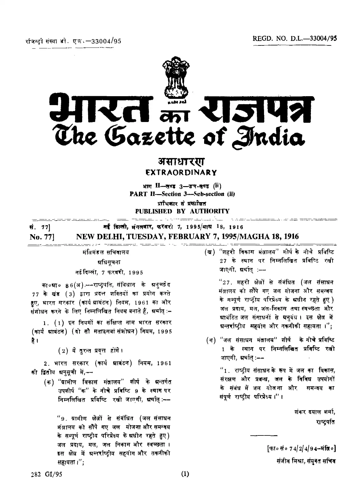
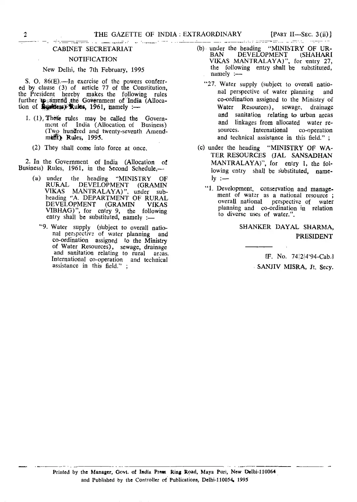

Amendment #227 (S.O. 86(E), 1995)
3 changes: 0 to the First Schedule, 3 to the Second Schedule. 2 applied1 not applied
The order, page by page
Page 1 of 2

Page 2 of 2

123Schedule 2 › MINISTRY OF RUKAL DEVELOPMENT › DEPARTMENT OF RURAL DEVELOPMENT › entry 9
- 9. Water supply (subject to overall national perspective of water planning and co-ordination assigned to the Ministry of Water Resources), sewage, drainage and sanitation relating to rural arcas. International co-operation and technical assistance in this field.
applied at schedule 2 › ministry MINISTRY OF RURAL DEVELOPMENT › department A › entry 9 in the Rules after #227
states inferred loose
Schedule 2 › MINISTRY OF URBAN DEVELOPMENT › entry 27
- 27. Water supply (subject to overall national perspective of water planning and co-ordination assigned to the Ministry of Water Resources), sewage, drainage and sanitation relating to urban areas and linkages from allocated water resources. International co-operation and technical assistance in this…
applied at schedule 2 › ministry MINISTRY OF URBAN DEVELOPMENT › entry 27 in the Rules after #227
Schedule 2 › MINISTRY OF WATER RESOURCES › entry 1
- 1. Development, conservation and management of water as a national resource overall national perspective of water planning and co-ordination in relation to diverse uses of water.
not applied (the change could not be placed in the Rules as read; see How this document was read)
How this document was read
Changes placed by an inference rule
| Change | Rule | Status | What |
|---|---|---|---|
| 1 | loose | accepted | change 1: ministry MINISTRY OF RUKAL DEVELOPMENT taken for ministry MINISTRY OF RURAL DEVELOPMENT, named loosely |
Known issues
| Change | Issue | Known as |
|---|---|---|
| 3 | change 3: no entry 1 under schedule 2 › ministry MINISTRY OF WATER RESOURCES | Entries not in the state |
From the Government of India (Allocation of Business) Rules, 1961 and their amendments, as published by the Cabinet Secretariat (cabsec.gov.in), read by orgpedia. The readings of the older scanned gazettes have known gaps.